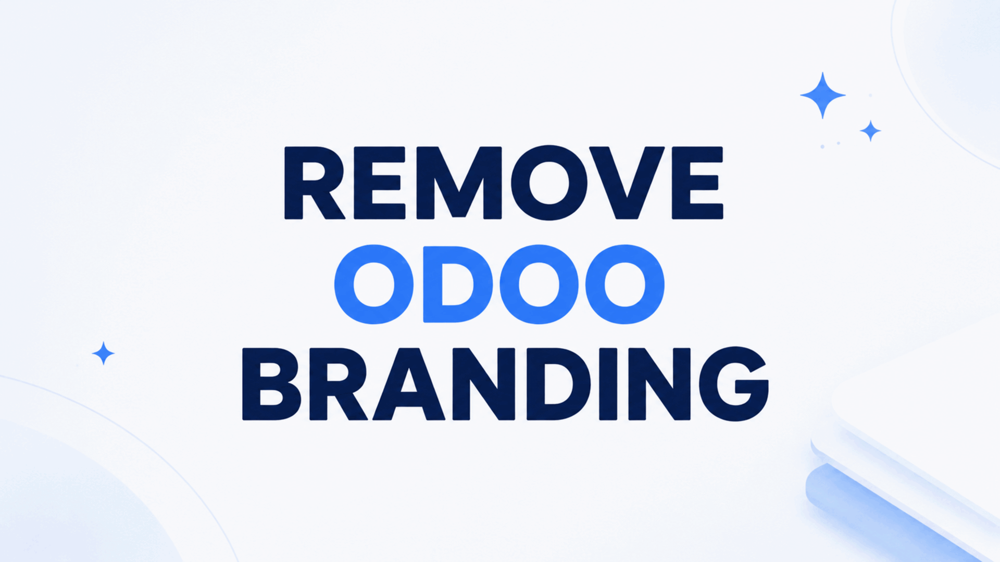

Replace visible vendor promotion with your own product name, favicon, colors, links, browser metadata, email footers, and assistant identity.
Configure a product name, primary color, favicon, support links, and custom footers.
Remove vendor account, support, app-store, import, error-dialog, and systray branding.
Use a validated entry path such as /erp instead of /web.
